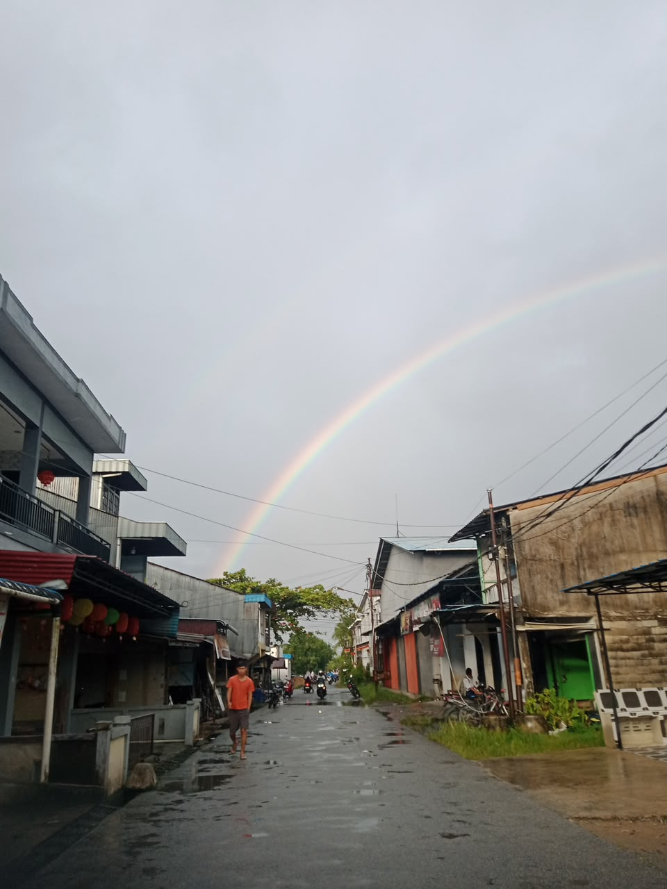

Pertanian
Hamparan sawah menjadi bagian penting dari lanskap dan keseharian desa.
TENTANG DESA
Sebuah halaman untuk mengenal karakter, suasana, dan kehidupan pedesaan.

CERITA DESA
Suasana Semparuk Sebangkau tercermin dari jalur desa yang sederhana, halaman rumah yang hijau, pepohonan tropis, dan hamparan lahan pertanian di sekitarnya.
Ruang-ruang seperti ini bukan hanya indah untuk dipandang, tetapi juga menjadi bagian dari aktivitas dan cerita masyarakat sehari-hari.
SUASANA DESA
Pemandangan jalan di Semparuk Sebangkau setelah hujan dengan pelangi yang menghiasi langit.

NILAI YANG DIANGKAT
Hamparan sawah menjadi bagian penting dari lanskap dan keseharian desa.
Vegetasi tropis dan pepohonan menghadirkan nuansa teduh di sekitar permukiman.
Jalan kecil dan rumah warga menciptakan suasana kampung yang akrab.